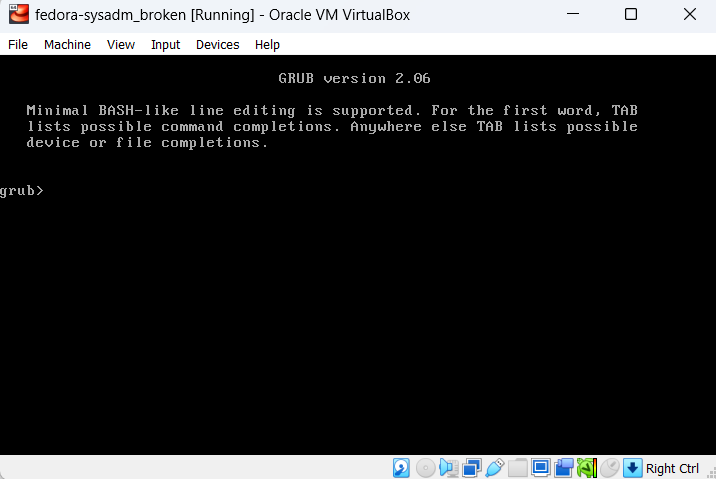
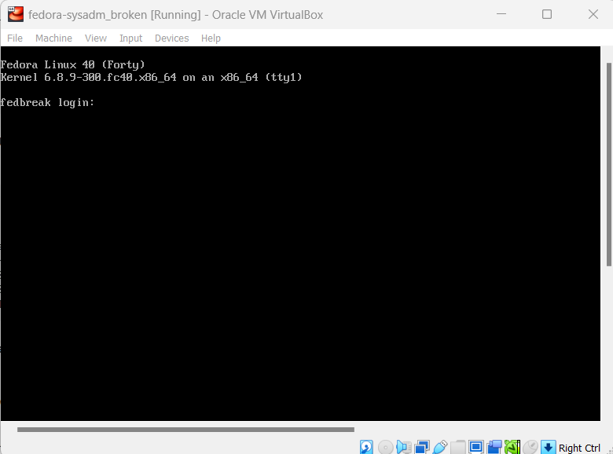

Troubleshooting GRUB
October 03, 2024.
The bootloader is the first program that is executed after the firmware has initialized hardware after power-on. The bootloader then hands control over to the kernel to continue with the boot process.
GRUB (GRand Unified Bootloader) originated in 1995 with Erich Boleyn, who began modifiying the bootloader from FreeBSD, after realizing that it would be much easier to write a new bootloader from scratch, GRUB was born.
On modern systems GRUB2 will be found, which is a rewrite of version 0 of GRUB, now refered to as GRUB legacy.
GRUB2 shares many similarities with GRUB legacy to the end user, but the configuration files have a new structure. GRUB2 has features like: Rescue mode, custom menus, themes, non-x86 architecture support, etc.
In this article we will explore and practice a recovery scenario related to the the GRUB2 bootloader in Linux, from here on I will just refer to it as GRUB.
NB: Only perform this scenario in a controlled environment i.e. virtual machines created for testing purposes.
Table of contents
- Table of contents
- Corrupt grub.cfg and/or grubenv
- Booting from a live OS
- Mounting root and boot filesystems
- Mounting special devices
- Change root directory
- Regenerate GRUB configuration
- Closing thoughts
Corrupt grub.cfg and/or grubenv
We will use Finnix as our rescue/live iso since it is lightweight and it is specifically made to be a utility live Linux distribution. You can find more information on Finnix OS official website.
Lets start by replacing the content of grub.cfg with random bytes to simulate an invalid/corrupt GRUB configuration file:
msoto$ dd if=/dev/urandom bs=1K count=5 1>/boot/grub2/grub.cfg
And reboot the machine. The VM should now have booted into a grub shell, since it could not determine the location for the root partition.
Now we have a system that will not boot on its own. And requires some troubleshooting, in this case we know the root partition is fine, and we simply broke the grub.cfg file.
Lets try to fix it now.
These are the steps we need to perform:
- Boot from a live OS
- Mount the VM root and boot filesystems
- Mount additional special filesystems:
dev,procandsys - Change root directory of the current shell into the temporary mountpoint
- Regenerate GRUB configuration file
1. Boot from a live OS
First insert the Finnix iso image into the virtual Optical Drive device on your virtual machine manager.You should now be able to reboot into the live Finnix OS.
2. Mounting root and boot filesystems
Executelsblk to show all available block devices.If you used LVM the name of the volumes may reveal where the root partition is, if not, you can temporarily mount filesystems and list the files on it until you find the root partition.
root@tty1:~# lsblk
NAME MAJ:MIN RM SIZE RO TYPE MOUNTPOINTS
loop0 7:0 0 420.6M 1 loop /usr/lib/live/mount/rootfs/filesystem.squashfs
/run/live/rootfs/filesystem.squashfs
sda 8:0 0 20G 0 disk
├─sda1 8:1 0 1M 0 part
├─sda2 8:2 0 1G 0 part
└─sda3 8:3 0 19G 0 part
└─fedora_fedora--db-root 254:0 0 15G 0 lvm
sr0 11:0 1 498M 0 rom /usr/lib/live/mount/medium
/run/live/medium
zram0 252:0 0 987M 0 disk [SWAP]
In this example above we can see that the root partition is probably located in
/dev/fedora_fedora-db/root filesystem.Lets create a chroot directory under
mnt and mount the root filesystem there:
root@tty1:~# mkdir /mnt/rootdir
root@tty1:~# mount /dev/fedora_fedora-db/root /mnt/rootdir/
At this moment if you tried to list the files in /mnt/rootdir/boot/ it would be empty, so we need to find the partition with the boot filesystem.
root@tty1:~# ls -l /mnt/rootdir/boot/
total 0
We can use fdisk to find the boot partition
root@tty1:~# fdisk -l /dev/sda
Disk /dev/sda: 20 GiB, 21474836480 bytes, 41943040 sectors
Disk model: VBOX HARDDISK
Units: sectors of 1 * 512 = 512 bytes
Sector size (logical/physical): 512 bytes / 512 bytes
I/O size (minimum/optimal): 512 bytes / 512 bytes
Disklabel type: gpt
Disk identifier: 6203D0A1-E832-4B84-A153-0757ACF044E4
Device Start End Sectors Size Type
/dev/sda1 2048 4095 2048 1M BIOS boot
/dev/sda2 4096 2101247 2097152 1G Linux extended boot
/dev/sda3 2101248 41940991 39839744 19G Linux LVMGPT keeps a protective BIOS boot partition, but we actually need to mount the extended boot partition.
root@tty1:~# mount /dev/sda2 /mnt/rootdir3. Mounting special devices
At this point, we only need to mount special devices recursively:/dev/proc/sys
root@tty1:~# mount --rbind /dev/ /mnt/rootdir/dev/
root@tty1:~# mount --rbind /sys/ /mnt/rootdir/sys/
root@tty1:~# mount --rbind /proc/ /mnt/rootdir/proc/4. Change root directory
And we are ready tochroot
root@tty1:~# chroot /mnt/rootdir /bin/bash
[root@finnix /]# pwd
/
[root@finnix /]#$PS1 will change.5. Regenerate GRUB configuration
Now we can recreate GRUB configuration:[root@finnix /]# grub2-mkconfig -o /boot/grub2/grub.cfg
Generating grub configuration file ...
Adding boot menu entry for UEFI Firmware Settings ...
done
[root@finnix /]# head /boot/grub2/grub.cfg
#
# DO NOT EDIT THIS FILE
#
# It is automatically generated by grub2-mkconfig using templates
# from /etc/grub.d and settings from /etc/default/grub
#
### BEGIN /etc/grub.d/00_header ###
set pager=1
[root@finnix /]#We can verify it looks good.
Exit the chroot environment and reboot (don't forget to remove the .iso from the virtual optical drive).
The bootloader should now be able to read the Linux kernels available for boot and start the system normally:

Closing thoughts
In this article we explored how to repair a corrupt GRUB configuration, the same general steps can be followed for similar problems in the boot process.
For instance, in the case of corrupt GRUB installation files, we would issue grub2-install <DEV> to reinstall GRUB, where <DEV> would be replaced with the path to the boot partition,
followed by the recreation of configuration files with grub2-mkconfig.
Other problems in the GRUB stage will be explored in future articles.